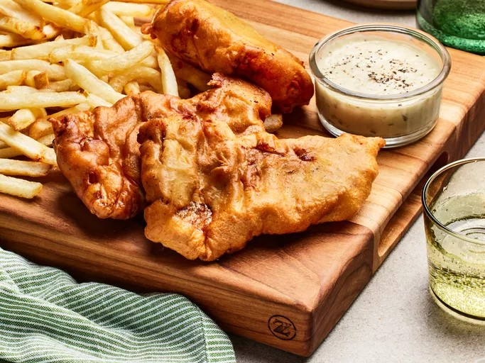

Fish and Chips

Description
You don't have to go to London for delicious fish and chips! This pub-worthy recipe will satisfy your next fried food craving.
Ingredients
- 4 large potatoes, peeled and cut into strips
- 1 cup all-purpose flour
- 1 teaspoon baking powder
- 1 teaspoon salt
- 1 teaspoon ground black pepper
- 1 cup milk
- 1 egg
- 1 quart vegetable oil for frying
- 1 ½ pounds cod fillets
Cooking steps:
- Gather all ingredients
- Place sliced potatoes in a medium bowl and cover with cold water
- Mix flour, baking powder, salt, and pepper together in a separate medium bowl
- Add milk and egg; stir until batter is smooth. Let stand for 20 minutes
- Meanwhile, heat oil in a large pot or electric skillet to 350 degrees F (175 degrees C)
- Drain and pat dry potatoes. Fry in hot oil until tender, about 5 minutes; drain on paper towels
- Dredge cod in batter, one piece at a time, and place in hot oil
- Fry fish in batches until golden brown on all sides; drain on paper towels. Monitor oil temperature, increasing the heat as needed to maintain 350 degrees F (175 degrees C)
- Fry potatoes again in hot oil until crisp, 1 to 2 minutes; drain on paper towels
- Serve and enjoy!
Back to recipes